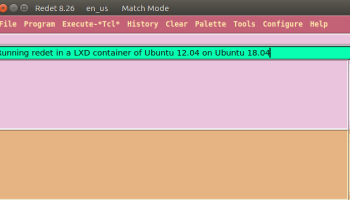
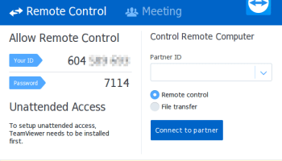

Использование пакета snap Radeone2
Как запускать графические (X11) приложения в контейнере Kali LXD
Как использовать NordVPN в контейнере LXD
NordVPN — один из многих VPN-сервисов. Меня попросили посмотреть, как заставить его работать в контейнере LXD, и в результате я пишу этот пост. Я не рекламирую этот сервис, не использую партнерские ссылки и т.д. д. До сих пор NordVPN отказывался исправлять свой официальный Linux-клиент для работы в контейнере.
Установка официального клиента
Давайте установим официальный клиент в контейнер LXD. Создайте контейнер и поместите в него оболочку . Затем загрузите пакет Deb и установите его. Начальный пакет Deb очень мал. В нем просто есть инструкции по настройке репозитория NordVPN в вашей системе. После того, как вы установите этот пакет, вы apt updateобновите список пакетов, а затем сможете установить фактический nordvpnпакет.
$ lxc запустить ubuntu: 18.04 nordvpn
Создание нордвпн
Запуск нордвпн
$ lxc ubuntu nordvpn
ubuntu@nordvpn:~$ wget https://repo.nordvpn.com/deb/nordvpn/debian/pool/main/nordvpn-release_1.0.0_all.deb
ubuntu@nordvpn:~$ sudo apt install -f ./nordvpn-release_1.0.0_all.deb
...
ubuntu@nordvpn:~$ sudo подходящее обновление
...
ubuntu@nordvpn:~$ sudo apt install -y nordvpn
...
NordVPN для Linux успешно установлен!
Чтобы начать, введите «логин nordvpn» и введите данные своей учетной записи NordVPN. Затем введите «nordvpn connect», и все готово! Если вам нужна помощь в использовании приложения, используйте команду nordvpn --help.
...
ubuntu@nordvpn:~$ nordvpn
Добро пожаловать в клиентское приложение NordVPN для Linux!
Версия 3.7.3
Сайт: https://nordvpn.com
Использование: nordvpn [глобальные параметры] команда [параметры команды] [аргументы…]
...
ubuntu@nordvpn:~$
Запуск официального клиента NordVPN
Давайте попробуем запустить официальный клиент NordVPN. Логинимся, а потом подключаемся. Не работает! Что-то не так.
ubuntu@nordvpn:~$ nordvpn login --username myusername@example.com --password mypassword
Добро пожаловать в NordVPN! Теперь вы можете подключиться к VPN, используя nordvpn connect.
ubuntu@nordvpn:~$ nordvpn подключается
Подключение к Германии #500 (de500.nordvpn.com)
транспорт закрывается
ubuntu@nordvpn:~$ nordvpn подключиться
Упс! Не удается связаться с системным демоном.
ubuntu@nordvpn:~$
Мы смотрим в /var/log/syslog. Вот оскорбительные строки. Официальный клиент вылетает из-за какой-то ошибки границ массива.
16 июня 19:59:31 nordvpn nordvpnd[1423]: отладка: Вт 16 июня 19:59:31 2020 УПРАВЛЕНИЕ: подключен к серверу управления в /var/run/nordvpn-openvpn.sock
16 июня 19:59:31 nordvpn nordvpnd[1423]: 2020/06/16 19:59:31 [ИНФО] Вт 16 июня 19:59:31 2020 УПРАВЛЕНИЕ: подключен к серверу управления в /var/run/nordvpn-openvpn .носок
16 июня 19:59:31 nordvpn nordvpnd[1423]: паника: ошибка выполнения: индекс вне диапазона [1] с длиной 1
16 июня 19:59:31 nordvpn nordvpnd[1423]: горутина 117 [работает]:
16 июня 19:59:31 nordvpn nordvpnd[1423]: nordvpn/daemon.ruleParsing(…)
16 июня, 19:59:31 nordvpn nordvpnd[1423]: #011/builds/nordvpn/apps-source/linux-app/src/daemon/vpn_ipv6.go:117
16 июня 19:59:31 nordvpn nordvpnd[1423]: nordvpn/daemon.( Ipv6).Disable(0xc000390844, 0x0, 0x0) 16 июня 19:59:31 nordvpn nordvpnd[1423]: #011/builds/nordvpn/apps -source/linux-app/src/daemon/vpn_ipv6.go:43 +0x6c7 16 июня 19:59:31 nordvpn nordvpnd[1423]: nordvpn/daemon.( OpenVPN).Start(0xc0004466e0, 0x2b89520, 0xc00042dec0, 0x18, 0xc00 , 0x18, 0x0, 0x0, 0x0, 0x0, …)
16 июня, 19:59:31 nordvpn nordvpnd[1423]: #011/builds/nordvpn/apps-source/linux-app/src/daemon/vpn_openvpn.go:159 +0xd11
16 июня 19:59:31 nordvpn nordvpnd[1423]: создано nordvpn/daemon.Connect
16 июня, 19:59:31 nordvpn nordvpnd[1423]: #011/builds/nordvpn/apps-source/linux-app/src/daemon/rpc.go:288 +0x882
16 июня 19:59:31 nordvpn systemd[1]: nordvpnd.service: основной процесс завершен, код = завершен, статус = 2/INVALIDARGUMENT
16 июня, 19:59:31 nordvpn systemd[1]: nordvpnd.service: Ошибка с результатом «код выхода».
16 июня, 19:59:36 nordvpn systemd[1]: nordvpnd.service: Время задержки обслуживания истекло, запланирован перезапуск.
Одна и та же ошибка появляется независимо от того, запускаете ли вы клиент с sudo -H, запускаете ли вы его в привилегированном контейнере. Что-то не так в этом официальном клиенте NordVPN.
Итак, что нам теперь делать? Судя по всему, их клиент основан на OpenVPN, поэтому воспользуемся клиентом OpenVPN напрямую.
Использование OpenVPN-клиента
Выходим из контейнера, удаляем его и создаем новый. Один без официального клиента.
ubuntu@nordvpn:~$ logout
$ lxc остановить nordvpn
$ lxc удалить nordvpn
$ lxc запустить ubuntu:18.04 nordvpn
Создание nordvpn
Запуск nordvpn
$ lxc ubuntu nordvpn
ubuntu@nordvpn:~$
Затем мы обновляем список пакетов и устанавливаем openvpnпакет.
ubuntu@nordvpn:~$ sudo apt update
ubuntu@nordvpn:~$ sudo apt install -y openvpn
OpenVPN требует файлы конфигурации для VPN-серверов. У NordVPN есть этот список в Интернете по адресу https://downloads.nordcdn.com/configs/archives/servers/ovpn.zipДавайте загрузим его. Это файл размером 21 МБ.
ubuntu@nordvpn:~$ wget https://downloads.nordcdn.com/configs/archives/servers/ovpn.zip
We unzip into the /etc/openvpn/client directory. The ZIP has folders, so we instruct unzip to ignore folders and dump them all in the given folder.
ubuntu@nordvpn:~$ sudo unzip -d /etc/openvpn/client/ -j ovpn.zip
We are ready to connect to some VPN server. But which one? We can select any. This page, https://nordvpn.com/servers/tools/, will auto-detect the closest VPN server. Let’s assume the result is de505.nordvpn.com. We do not connect yet. Do the following section to avoid DNS leakage, then we connect on the next section.
Avoiding DNS leakage
By default, OpenVPN does not set the DNS server and keeps the existing DNS configuration. The result of this, is DNS leakage; that is, name resolutions do not happen through the VPN but use the local network.
What needs to happen, is to add the appropriate script to OpenVPN to configure the DNS when the VPN is established, and when the VPN is teared down.
We use Ubuntu 18.04 LTS in the container, therefore, we configure systemd-resolved for this. Here are the commands. We install the helper, and edit the .ovpn file to use the helper.
ubuntu@nordvpn:~$ sudo apt install openvpn-systemd-resolved
Then, edit the OpenVPN configuration file, in our case, /etc/openvpn/client/de505.nordvpn.com.tcp.ovpn and add the following lines,
script-security 2
up /etc/openvpn/update-systemd-resolved
down /etc/openvpn/update-systemd-resolved
down-pre
We are ready now to connect. Note that if you change server, you need to edit the corresponding file manually as above.
Making the connection
We are ready to make the connection.
ubuntu@nordvpn:~$ sudo openvpn --config /etc/openvpn/client/de505.nordvpn.com.tcp.ovpn
Tue Jun 16 21:17:17 2020 OpenVPN 2.4.4 x86_64-pc-linux-gnu [SSL (OpenSSL)] [LZO] [LZ4] [EPOLL] [PKCS11] [MH/PKTINFO] [AEAD] built on May 14 2019
Tue Jun 16 21:17:17 2020 library versions: OpenSSL 1.1.1 11 Sep 2018, LZO 2.08
Enter Auth Username: myusername@example.com
Enter Auth Password: ***********
...
<14>Jun 16 21:17:42 update-systemd-resolved: Adding DNS Routed Domain .
<14>Jun 16 21:17:42 update-systemd-resolved: Adding IPv4 DNS Server 103.86.96.100
<14>Jun 16 21:17:42 update-systemd-resolved: Adding IPv4 DNS Server 103.86.99.100
...
Tue Jun 16 21:17:42 2020 Initialization Sequence Completed
Looks good. The VPN circuit is active until you hit Ctrl+C here to interrupt OpenVPN. You need to open a new terminal to the LXD container to use the VPN. We can see that the proper new DNS entries have been added to systemd-resolved.
$ lxc ubuntu nordvpn
ubuntu@nordvpn:~$ systemd-resolve --status
...
Link 7 (tun0)
Current Scopes: DNS
LLMNR setting: yes
MulticastDNS setting: no
DNSSEC setting: no
DNSSEC supported: no
DNS Servers: 103.86.96.100
103.86.99.100
DNS Domain: ~.
ubuntu@nordvpn:~$
Automating the setup with systemd
DuckHook in a comment below describes how to setup OpenVPN so that the NordVPN VPN can start automatically. Have a look at the comments for more. Thanks DuckHook!
Conclusion
The official NordVPN client does not work in a LXD container, and it appears that it’s just a bug that they know about and do not intend to fix. The developers did not envision the client to run in a container, nor did they test it. We work around this issue by installing the OpenVPN client and using it to connect to one of their VPN servers.
Share this:
Loading...

How to easily run graphics-accelerated GUI apps in LXD containers on your Ubuntu desktop
June 25, 2018
In "general"
Running Steam in a LXD system container
April 4, 2019
In "Linux"

February 20, 2018
In "Planet Ubuntu"
Hi Simos,
Your awesome tutorials have opened up whole worlds for me. So very much appreciated, and keep up the good work!
In my case, I needed the –configure flag to make this work, hence, sudo openvpn –configure /etc/openvpn/client/de505.nordvpn.com.tcp.ovp
Otherwise, it worked perfectly.
Another tip: invoke the VPN session with screen or tmux, then detach to free up the console. Works a treat. If you could post a tutorial on starting this as a service module, that would be so useful. Of course, this sort of constrains one to only a single geographical server, but that’s all that many of us need.
Really appreciate the thought, work and generosity that you put into this.
Oops. That last was incomplete. Missing the final ‘n’. It’s also hard to see the double hyphen before “configure”:
sudo openvpn –configure /etc/openvpn/client/de505.nordvpn.com.tcp.ovpn
keep making mistakes and there’s no ‘edit’ function for comments:
sudo openvpn --config /etc/openvpn/client/de505.nordvpn.com.tcp.ovpn
Thanks for the kind words!
I fixed the omission of --config.
I do not have a NordVPN account; I wrote this post thanks to a temporary account I was given at https://discuss.linuxcontainers.org/t/nordvpn-in-lxc-unpriv-priv-container-doesnt-work/8128/13
If you can work out the systemd configuration, feel free to post below. I suppose it should be easy as the OpenVPN package is aware of systemd.
Simos posed me the challenge of creating a systemd service to autostart NordVPN at boot. After a bit of experimentation, I think the instructions below should work.
Follow Simos’s instructions up to just before downloading the zip file.
Step 1
We wish to unzip the ovpn files into a local directory. I made mine a directory nested one level below my local bin, but yours can be elsewhere. Just remember where you put it.
mkdir -R ~/bin/nordvpn
cd ~/bin/nordvpn
wget https://downloads.nordcdn.com/configs/archives/servers/ovpn.zip
unzip ovpn.zip
This will create two subfolders in ~/bin/nordvpn owned by the normal user. One is for TCP connections, the other is UDP. The reason I don’t like to unpack directly into /etc/openvpn/client is because I like to keep my system directories as clean as possible. And since NordVPN’s servers number almost six thousand at last count, I do not want all of those files spamming my etc directory. Moreover, there is another advantage to keeping the etc directory clean, which is discussed in Step 9 below. So instead, we will copy only the single server config that we wish, as per the instructions in Step 4 below.
Шаг 2
Чтобы автоматически подключить нашу VPN при запуске, мы должны указать имя пользователя и пароль из файла. Проблема в том, что Ubuntu хранит эти учетные данные в открытом виде. Поскольку имя пользователя и пароль для вашей основной учетной записи NordVPN являются конфиденциальными и никому не должны раскрываться, не рекомендуется хранить их в виде простого текста. К счастью, NordVPN предоставляет отдельный набор учетных данных службы для таких случаев использования, как наш. Это доступно на панели управления NordVPN. Если этот альтернативный набор имени пользователя/пароля когда-либо будет скомпрометирован (например, у вас украдут ноутбук), их можно заменить на NordVPN без необходимости менять имя пользователя или пароль вашей основной учетной записи. Инструкции находятся здесь: https://support.nordvpn.com/Connectivity/Linux/1047409422/How-can-I-connect-to-NordVPN-using-Linux-Terminal.htm
Допустим, наши специальные учетные данные:
Username: xxxxxxxxxxxxxxxxxxxxxx
Password: 0000000000000000000000
Используя эти учетные данные, мы создаем файл:
sudo nano /etc/openvpn/credentials
В нем должно быть всего две строки: имя пользователя Special Credentials в строке 1 и пароль в строке 2:
xxxxxxxxxxxxxxxxxxxxxx
0000000000000000000000
Сохранить и выйти.
Шаг 3
Найдите свой оптимальный сервер NordVPN, перейдя по ссылке Симоса выше. Продолжим использовать пример Симоса. Добавьте блок сценариев безопасности в /your/path/to/de505.nordvpn.com.tcp.ovpn, чтобы предотвратить утечку DNS. Напомним, что наши файлы находятся в нашей собственности в нашем домашнем каталоге, поэтому не вызывайте редактирование с помощью sudo.
Теперь найдите строку, содержащую:
auth-users-pass
Измените его на:
auth-user-pass /etc/openvpn/credentials
Сохранить и выйти
Шаг 4
Как root, скопируйте файл с общим именем, например client.conf, в соответствующий каталог etc:
sudo cp /your/path/to/de505.nordvpn.com.tcp.ovpn /etc/openvpn/client/client.conf
Шаг 5
И client.conf, и более ранний файл учетных данных хранятся в открытом виде. Для дополнительной безопасности сделайте их доступными только для root:
sudo chmod 600 /etc/openvpn/credentials /etc/openvpn/client/client.conf
Шаг 6
Хотя openvpn поддерживает systemd, я не смог создать рабочий синтаксис, учитывая мои элементарные навыки работы с systemd. Вместо этого я создал сервисный модуль systemd, который я назвал nordvpn.service, содержащий следующее содержимое:
[Unit]
Description=Connect to NordVPN
Requires=network.target
After=network-online.target
[Service]
Type=simple
ExecStart=/usr/sbin/openvpn --config /etc/openvpn/client/client.conf
[Install]
WantedBy=multi-user.target
Шаг 7
Включите сервисный модуль, чтобы он автоматически запускался при загрузке:
sudo systemctl enable nordvpn.service
Запустите службу OpenVPN:
sudo systemctl start nordvpn.service
Проверить состояние:
sudo systemctl status nordvpn.service
Шаг 8
Чтобы проверить, появляется ли он при загрузке, перезагрузите контейнер, затем снова проверьте статус:
sudo systemctl status openvpn
Проверьте VPN-соединение:
curl ipinfo.io
Шаг 9
Обратите внимание, что, предоставив один файл client.conf по умолчанию в каталоге etc, можно легко изменить VPN-сервер, повторив шаг 4, но используя другой файл .ovpn. Просто убедитесь, что он содержит блок сценария безопасности и указатель на файл учетных данных. Доступ к новому серверу можно получить, задействовав nordvpn.service с помощью команды перезапуска systemd.
Резюме
That’s it: so versatile, so many possibilities. Clone the container, change the VPN server, and one could have any number of different containers tunnelled to different VPN servers at once, limited only by bandwidth or your VPN provider’s device limits. Go nuts!
Thank you for taking the time and composing the instructions on how to automate the VPN with systemd!
I edited the instructions to add markdown markup.
I am adding a note in the post about your instructions.
Hi Simos,
One further correction/adjustment:
The script block for preventing DNS leakage is missing an element. I had to add:
dhcp-option DOMAIN-ROUTE .
Особенно обратите внимание на конечную точку, которую легко пропустить.
Полный блок выглядит так:
script-security 2
up /etc/openvpn/update-systemd-resolved
down /etc/openvpn/update-systemd-resolved
dhcp-option DOMAIN-ROUTE .
вниз-предварительно
После добавления dhcp-опции утечки больше нет.
Привет, у меня есть вопрос ( https://discuss.linuxcontainers.org/t/systemctl-disable-service-operation-not-permitted/10946 )
Я использую NordVPN в контейнере с LXC 3.0.3 и Ubuntu 18.04.
Я хотел бы отключить демон NordVPN с помощью «systemctl disable nordvpnd» от root.
Поискав в журналах, я нашел в «/var/log/syslog»:
systemd[1]: nordvpnd.socket: не удалось сбросить устройства.list: операция не разрешена
systemd[1]: nordvpnd.service: не удалось сбросить устройства.list: операция не разрешена
Можно ли исправить/заставить?
Мое лучшее понимание ошибки Failed to reset devices.list: операция не разрешена , это предупреждение или ошибка, это безобидно (это действительно раздражает, но это все еще работает). Системные контейнеры используют ту же среду выполнения, что и ваша стандартная Ubuntu, и со стандартной Ubuntu на виртуальной машине или компьютере без операционной системы вы не получите это сообщение.
Либо это слишком большое изменение, чтобы сделать его во время выполнения, либо изменение должно произойти выше по течению вsystemd проекте, и по какой-то причине это либо невозможно сделать, либо потребуется время, чтобы такое изменение достигло образов Ubuntu.
Я считаю, что это должно было обсуждаться раньше, и в Интернете должна быть некоторая справочная информация по этому поводу.
Если у вас что-то не работает и вы думаете, что это связано с этим, то это следует исследовать. Можете ли вы убедиться, что вы не можете отключить VPN с помощью systemctl disable nordvpnd?
s/auth-users-pass/auth-user-pass/ на шаге 3
Спасибо, я исправил опечатку в комментарии на шаге 3.
Этот сайт использует Akismet для уменьшения количества спама. Узнайте, как обрабатываются данные ваших комментариев .
Пожертвования не нужны, но приветствуются!
ПОДПИШИТЕСЬ НА БЛОГ ПО ЭЛЕКТРОННОЙ ПОЧТЕ
Введите свой адрес электронной почты, чтобы подписаться на этот блог и получать уведомления о новых сообщениях по электронной почте.
�